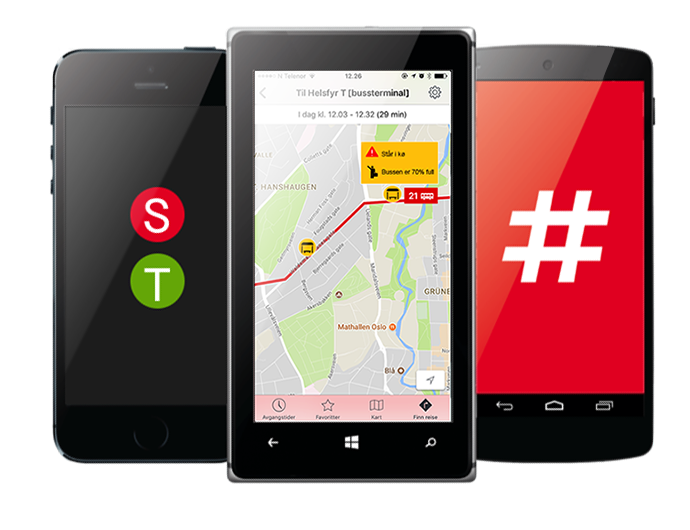

- effektivisering av trafikken -
SmartTransit er et teknisk system som forbedrer det kollektive tilbudet i Oslo. Vårt hovedmål er at all kollektiv transport skal ha førsterett i trafikken. Med vårt system vil kollektiv transport alltid få grønt lys ved lyskryss, så langt det er mulig. Dette systemet skal også implementeres i den nåværende ruter reise appen. I appen skal man kunne se oversiktlige linjekart med transportmidlenes ruter, der kjøretøyene dynamisk beveger seg på kartet. Vi vil legge til andre nyttige funksjoner, som bussens status. Det vil si hvor full den er, og eventuelle andre viktige beskjeder (forsinkelser eller andre forstyrrelser). Vårt system kan også samarbeide med utrykningskjøretøy. Når en utrykning pågår vil alle trafikklysene i område bli røde. Kollektiv transport vil få beskjed om utrykningen før den kommer, så de vil få god tid til å vike. Med SmartTransit vil trafikkflyten i Oslo forbedre seg drastisk. Det å reise kollektivt vil bli mer attraktivt dersom det går raskere for passasjerene å komme seg fra A til B. Dette vil bety færre biler og mindre utslipp. Det er snart klart, reis smart.